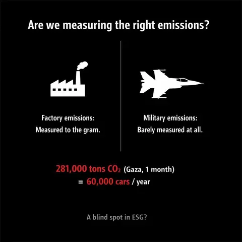
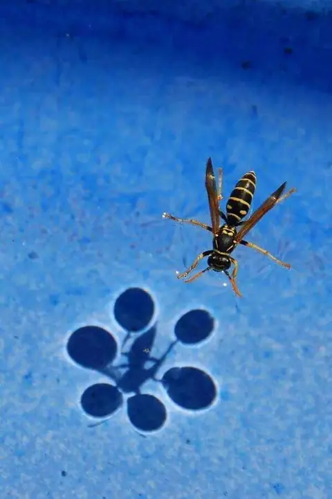
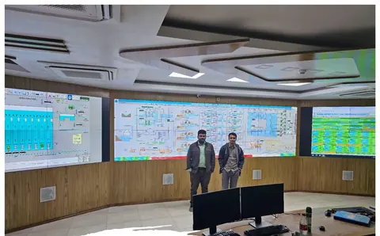
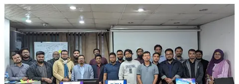
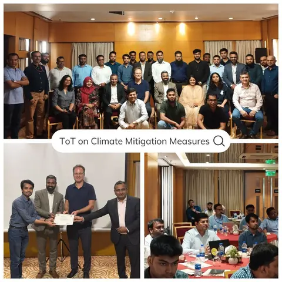
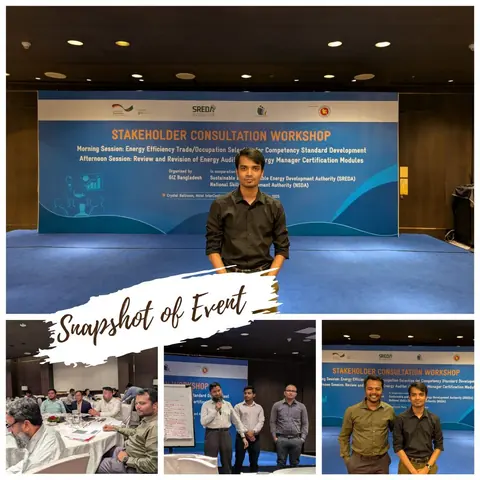

Sakib HasanJeebon
I help textile manufacturers cut energy and emissions, from factory-floor audits to science-based targets.
See my workEnergy, water and carbon, counted.
What I do
Industrial sustainability: energy, water and greenhouse-gas management for textile and garment supply chains in Bangladesh, India and Pakistan. I started on the factory floor with energy audits, chemical assessments and effluent-plant evaluations.
Two companies, one role
Since July 2026 I hold the same title at two sister companies. At IRI I lead client relations, training and ESG platform sales; at ERI I do the same for its resource-efficiency, decarbonization and reporting services.
What I'm building
RTIS, the resource-tracking and ESG data platform, and the training that makes its numbers usable. I'm automating assessment work with AI, and studying garment business at IBA, University of Dhaka.
ESG reporting
- GRI, CSRD and CSDDD
- SBTi target setting
- Higg FEM
- UNFCCC alignment
Decarbonization
- GHG accounting, Scope 1–3
- Mitigation road-mapping
- Climate training design
Energy and resources
- Industrial energy auditing
- Water and chemical management
- ETP evaluation
- Renewable feasibility
Data and software
- RTIS platform architecture
- Predictive efficiency models
- Python, data visualization
- AI workflow automation
Track record
400+professionals trained in GHG accounting, RTIS and resource efficiency
90+new businesses onboarded to the RTIS platform
80+industrial energy audits in textile and garment factories
25factories guided to SBTi-aligned targets
Experience
- ERI Engineer, RTIS Integration Lead, Manager, Head of Client Relations and Training
- IRI Head of Client Relations and Training
- Research Graduate research, BUET
- Study MSc at BUET, PGD in Garment Business at IBA
-
Jul 2026 – presentDhaka, on-site
Head of Client Relations and Training
Engineering Resources International (ERI) Ltd.Concurrent with IRI
- Lead client relationships for ERI's resource-efficiency, decarbonization and sustainability-reporting engagements with brands and manufacturers.
- Run RTIS certification and sustainability training programmes for factory teams.
- Coordinate delivery between ERI and its sister concern IRI, so clients get one point of contact across both.
-
Jan 2024 – presentDhaka
Head of Client Relations and Training
Intelligent Resources International (IRI) Ltd.Concurrent with ERI
- Automating assessment and reporting workflows and building AI skills across the organisation, cutting mandays and resource use.
- Closed a €85K OECD-aligned ATTI Bangladesh Needs Assessment contract through a competitive multi-stage bid.
- Generated and manage $55K in annual recurring revenue from ESG data-platform sales and renewals.
- Guided 25 factories through SBTi-aligned emission-reduction target setting.
- Architected the RTIS ESG reporting engine covering GRI, CSRD, CSDDD and SBTi.
- Ran 20+ stakeholder sessions with brands, sponsors and factories; launched 3 new services that grew the user base by 25%.
- Lead a team of five; built the regional ESG services pipeline across Bangladesh, India and Pakistan and beyond apparel into new industrial sectors.
-
Jul 2023 – Dec 2023
Manager, Technical Integration and Training
Engineering Resources International (ERI) Ltd.
- Onboarded 30+ factories; designed and delivered training to 400+ sustainability professionals across South Asia.
- Aligned factory-level environmental strategy with UNFCCC climate objectives.
- Launched 3 sustainability programmes strengthening supply-chain performance.
-
Jul 2022 – Jun 2023
RTIS Integration Lead
Engineering Resources International (ERI) Ltd.
- Developed the core architecture and training modules of RTIS, the Resource Tracking Information System for ESG monitoring.
- Launched the platform and scaled onboarding to 60+ factories for real-time resource monitoring.
- Built predictive resource-efficiency models for the apparel sector.
-
May 2021 – Jun 2022
Engineer, Sustainable Development and Engineering
Engineering Resources International (ERI) Ltd.
- Conducted 80+ energy audits, 40+ chemical assessments and 15+ effluent treatment plant evaluations in textile and garment factories.
Writing
Notes on energy, climate, ESG and AI, first posted on LinkedIn.

Are we measuring the right emissions?Mar 2026 ÷400Why 1900 wasn't a leap year, but 2000 wasFeb 2026 Energy vs food is now AI vs foodFeb 2026
580The math behind a carbon-neutral babyOct 2025
Energy vs food is now AI vs foodFeb 2026
580The math behind a carbon-neutral babyOct 2025
 Bangladesh opens its renewable power marketOct 2025
TAnts vs humans: who solves problems better?Dec 2024
Bangladesh opens its renewable power marketOct 2025
TAnts vs humans: who solves problems better?Dec 2024
 Fashion's climate wake-up callJun 2025
2×2What game theory teaches about cooperationNov 2024
Fashion's climate wake-up callJun 2025
2×2What game theory teaches about cooperationNov 2024

A wasp, some water, and surface tensionDec 2024 290 dBHow loud would the Sun be?2024 What a candle flame does in space2024
All writing
What a candle flame does in space2024
All writing
Between knowing and doing is where I work.
Plant visits, trainings and workshops, from Dhaka's water treatment plants to climate and Agile courses. Most of the technical content is familiar; the distance between it and factory practice is the lesson.




Education
- Post Graduate Diploma in Garment Business2026 – presentInstitute of Business Administration, University of Dhaka. Nine months in three modules: management core, industry and trade subjects taught by practitioners, and an industry attachment.
- MSc, Chemical Engineering2021 – 2024Bangladesh University of Engineering and Technology (BUET). Fuels and combustion, biochemical engineering, kinetics and catalysis.
- BSc, Chemical Engineering and Polymer Science2016 – 2021Shahjalal University of Science and Technology (SUST). Thermodynamics, reaction engineering, corrosion engineering.
- Second major, Computer Science and Engineering2017 – 2019SUST. Data structures, algorithm design and analysis, database systems.
Publication
International Journal of Energy Research, Wiley. Sakib Hasan Jeebon, Vaskur Kanti Roy, Partha Sarathi Paul and Shoeb Ahmed. doi:10.1155/er/6338790
Research
- Biomethane from distillery spent washBUET, 2022 – 2024Graduate research assistant. Assessed biomethane potential of spent wash in Bangladesh, tested inoculums beyond cow dung, and optimised anaerobic digestion across microbial population, substrate type and composition.
- Catalyst design for wastewater treatmentSUST, 2019 – 2020Undergraduate research. Developed and experimentally validated a catalyst for industrial wastewater treatment, from experimental design to execution.
Credentials
 Certified Energy Manager
GIZ BangladeshTraining of Trainers on climate mitigation for the textile sector
Certified Energy Manager
GIZ BangladeshTraining of Trainers on climate mitigation for the textile sector
 B-TopSEAgile 1 and the Agile 3 Training of Trainers
IBA, University of DhakaManagerial Communication for Professional Success
Cambridge · CISDLThe SDGs, the Paris Agreement and the Global Biodiversity Framework, and the law
B-TopSEAgile 1 and the Agile 3 Training of Trainers
IBA, University of DhakaManagerial Communication for Professional Success
Cambridge · CISDLThe SDGs, the Paris Agreement and the Global Biodiversity Framework, and the law
 Coursera and edXRutgers, Michigan, Duke, Yale and HarvardX
NEBOSH
NEBOSHClimate change and heat stress in occupational health and safety
Coursera and edXRutgers, Michigan, Duke, Yale and HarvardX
NEBOSH
NEBOSHClimate change and heat stress in occupational health and safety
All certifications
Training programmes
Contact
Write to me about any of these.
- Factory energy audits
- ESG reporting and science-based targets
- RTIS platform demos and onboarding
- Training programmes for your team
- Speaking and workshops